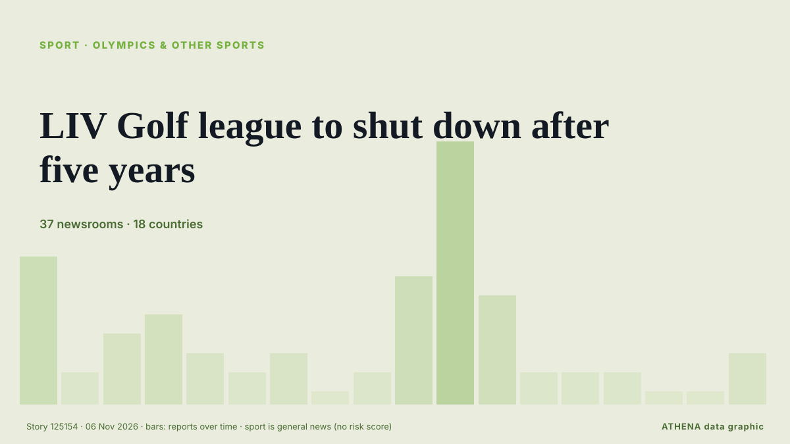

LIV Golf league to shut down after five years

BC Partners reportedly walks away after player exodus LIV set to appear at bankruptcy hearing on Thursday The rebel LIV Golf tour’s attempt to relaunch itself after filing for bankruptcy has… von Guardian Business
Unabhängig gemeldet von 37 Medien in 18 Ländern seit dem 4. Nov., zuerst von ESPN; die Berichterstattung flaut ab. Sport und Kultur werden ohne Risikobewertung abgelegt. Die Konfidenz liegt bei 87 % (hoch): 37 Medien bestätigen es unabhängig, bei einer mittleren Verlässlichkeit der Quellen von 72 %. Medien nach Land: Vereinigtes Königreich (9), Vereinigte Staaten (7), Australien (5). Berichterstattung: 4. Nov. bis 5. Nov., 22 Stunden.
Was sich geändert hat: 32 neue Berichte von 28 Redaktionen in den 24 Stunden bis 6. Nov..
Erste Schlagzeile: Sources: BC Partners pulls out of financing deal in major blow to LIV Golf 2.0
Schlagzeilen werden auf Englisch angezeigt, wie veröffentlicht.
Auf einen Blick
Ausgewählt, bewertet und geschrieben nach der veröffentlichten Methodik von ATHENA. Kein Redakteur greift in einzelne Ereignisse ein. So entsteht ATHENA ›
| 04 Nov 21:50 UTC | 7 |
|---|---|
| 04 Nov 23:50 UTC | 1 |
| 05 Nov 01:50 UTC | 3 |
| 05 Nov 03:50 UTC | 4 |
| 05 Nov 05:50 UTC | 2 |
| 05 Nov 07:50 UTC | 1 |
| 05 Nov 09:50 UTC | 2 |
| 05 Nov 11:50 UTC | 0 |
| 05 Nov 13:50 UTC | 1 |
| 05 Nov 15:50 UTC | 6 |
| 05 Nov 17:50 UTC | 13 |
| 05 Nov 19:50 UTC | 5 |
| 05 Nov 21:50 UTC | 1 |
| 05 Nov 23:50 UTC | 1 |
| 06 Nov 01:50 UTC | 1 |
| 06 Nov 03:50 UTC | 0 |
| 06 Nov 05:50 UTC | 0 |
| 06 Nov 07:50 UTC | 2 |
Warum diese Zahlen
Bedeutung
Risiko
Konfidenz
Die Berichterstattung – wer berichtete, und wann
Schlagzeile wie veröffentlicht · öffnet das Original- ESPN · Vereinigte StaatenSources: BC Partners pulls out of financing deal in major blow to LIV Golf 2.0
- ABC News Australia · AustralienLIV Golf future in doubt as premier says Australia event likely cancelled
- Sydney Morning Herald · Australien‘Game, set and match’: LIV Golf on the brink as investor pulls out
- Sydney Morning Herald · AustralienLifeline collapses for LIV Golf
- Forbes Business · Vereinigte StaatenMajor Setback For LIV 2.0 As BC Partners Pulls Out Of Financing Deal
- Guardian Business · Vereinigtes KönigreichLIV Golf’s attempted relaunch collapses after new lead investor withdraws, reports say
- Free Malaysia Today · MalaysiaLIV Golf relaunch collapses as key investor withdraws
- Korea Herald · SüdkoreaLIV's financial backer drops plans for new league in 2027
- CNBC World · Vereinigte StaatenLIV Golf faces liquidation after BC Partners scraps rescue plan
- Ada Derana · Sri LankaLIV Golf to wind down after backers withdraw support
- Arabian Business · Vereinigte Arabische EmirateLIV Golf’s $7bn Saudi gamble faces collapse as rescue investor walks away
- The National · Vereinigte Arabische EmirateLIV Golf faces liquidation as $300m rescue deal collapses
- Daily Maverick · SüdafrikaLIV Golf rescue plan falters as BC Partners abandons investment, FT reports
- Arab News · Saudi-ArabienLIV Golf relaunch collapses as key investor withdraws: reports
- Nile Post · UgandaLIV to wind down after backers withdraw support
- Belfast Telegraph · Vereinigtes KönigreichLIV supposedly wasn’t about the money, so why did NI golf legend Graeme McDowell cash in his chips after the Saudi Arabia gravy train left the station?
- Gulf News · Vereinigte Arabische EmirateLIV Golf on brink of collapse as McIlroy slams breakaway league again
- eNCA · SüdafrikaLIV Golf relaunch collapses as key investor withdraws: reports
- The Scotsman · Vereinigtes KönigreichLIV golf: 'Game, set and match' for breakaway circuit as £200m deal hits buffers
- BusinessWorld · PhilippinenLIV Golf faces liquidation after losing financial backing
- Sky Sports · Vereinigtes KönigreichIs this the end of the road for LIV Golf?
- The Canadian Press (via CityNews) · KanadaLIV Golf is winding down operations, lawyer says in bankruptcy hearing
- Sky Sports · Vereinigtes KönigreichLIV Golf to wind down
- CBC News (alternative feed) · KanadaLIV Golf shutting down operations, lawyer says in bankruptcy hearing
- CNA (Channel NewsAsia) · SingapurLIV Golf winding down operations after financing deal falls apart
- Forbes Business · Vereinigte StaatenLIV Golf Is Shutting Down And Liquidating Assets
- RTÉ News · IrlandLIV Golf to be liquidated as financing deal collapses
- ESPN · Vereinigte StaatenLIV Golf calls it quits, to shutter league without financial support for 2.0 model
- Sportstar · IndienLIV Golf files for bankruptcy, citing a lack of financial support
- Gulf News · Vereinigte Arabische EmirateLIV Golf to shut down after five years as $300 million rescue plan collapses
- Global News (World) · KanadaLIV Golf set to wind down operations, lawyers say
- Belfast Telegraph · Vereinigtes KönigreichLIV Golf to shut down after last-ditch financing deal falls through
- The Irish News (Belfast) · Vereinigtes KönigreichLIV Golf to shut down after last-ditch financing deal falls through
- Variety · Vereinigte StaatenSaudi-Backed LIV Golf, After Five Years of Trying to Challenge PGA Tour, Is Shutting Down
- Indian Express · IndienWhy LIV Golf, which shook up sport in 2022 with Saudi Arabia money, is winding down
- Deadline · Vereinigte StaatenLIV Golf Shutting Down After Last-Ditch Financing Plan Fails
- Sydney Morning Herald · AustralienLIV Golf enters liquidation
- Sky News (World) · Vereinigtes KönigreichBreakaway league LIV Golf to fold after filing for bankruptcy
- Sky Sports · Vereinigtes KönigreichLIV Golf: Timeline from big beginnings to liquidation
- The Age · AustralienSmith’s future unclear as LIV Golf moves to liquidate